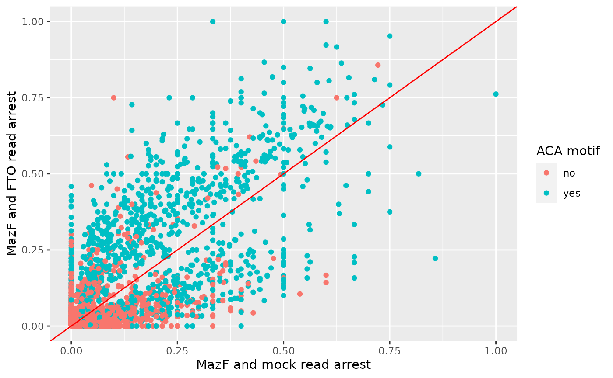
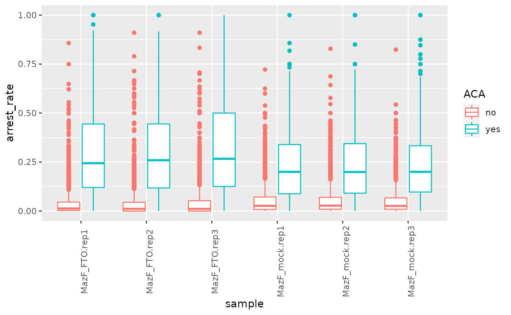

vignettes/JACUSA2helper-figure1e.Rmd
JACUSA2helper-figure1e.RmdSee vignette("JACUSA2helper") for general description of analysis with JACUSA2helper. For details on JACUSA2, check the JACUSA2 manual.
In the following, the use of of the rt-arrest function will be applied to a MazF digestion assay from Zhang et al. (2019). Herein, 3 replicates of HEK293 mRNA were treated with FTO or mock treated and then subjected to a MazF digestion assay.
JACUSA2helper directly reads in output from JACUSA2 via the read_result function. As a next step we apply filters on the p_value, read coverage and select for only robust events. This means that only sites are called where an arrest event is visible across all replicates for at least one condition.
The data structure is modified such that the presence or absence of the canonical clevage side motif is added (see also Figure 1D in manuscript).
Arrest rates are plotted depending on the presence or absence of an ACA motif.
filtered %>%
ggplot2::ggplot(ggplot2::aes(x = arrest_rate$cond1$rep1, y = arrest_rate$cond2$rep1, color = ACA)) +
ggplot2::geom_point() +
ggplot2::geom_abline(colour = "red") +
ggplot2::xlab("MazF+ and FTO- read arrest") +
ggplot2::ylab("MazF+ and FTO+ read arrest") 
Arrest rates are plotted depending on the presence or absence of an ACA motif.
toplot <- melt(as.matrix(filtered$arrest_rate))
toplot$ACA <- rep(filtered$ACA, 6)
colnames(toplot) <- c("Id", "sample", "arrest_rate", "ACA")
toplot$sample <- gsub("cond1", "MazF_mock", toplot$sample)
toplot$sample <- gsub("cond2", "MazF_FTO", toplot$sample)
ggplot2::ggplot(toplot, ggplot2::aes(x = sample, y = arrest_rate, color=ACA)) +
ggplot2::geom_boxplot() +
theme(axis.text.x = element_text(angle = 90))
Zhang, Zhang, Li-Qian Chen, Yu-Li Zhao, Cai-Guang Yang, Ian A. Roundtree, Zijie Zhang, Jian Ren, Wei Xie, Chuan He, and Guan-Zheng Luo. 2019. “Single-Base Mapping of m6A by an Antibody-Independent Method.” Science Advances 5 (7): eaax0250. https://doi.org/10.1126/sciadv.aax0250.